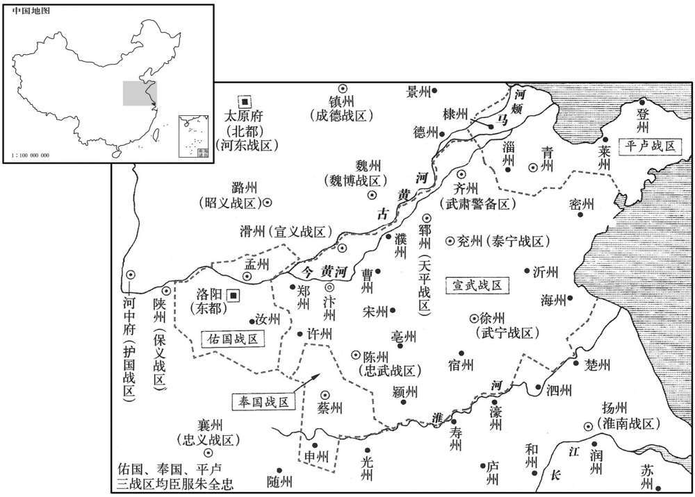
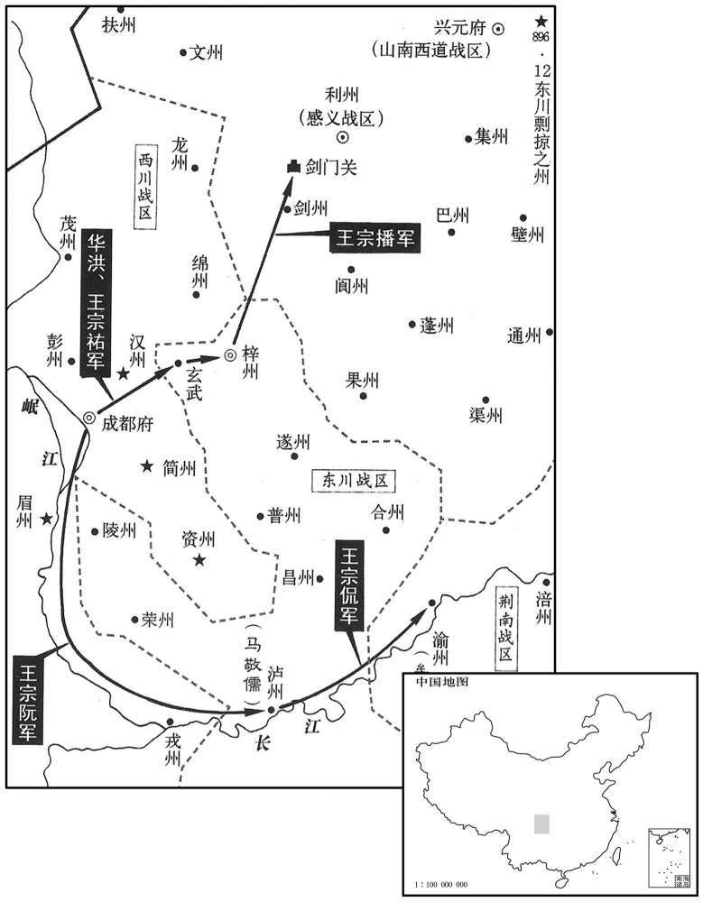
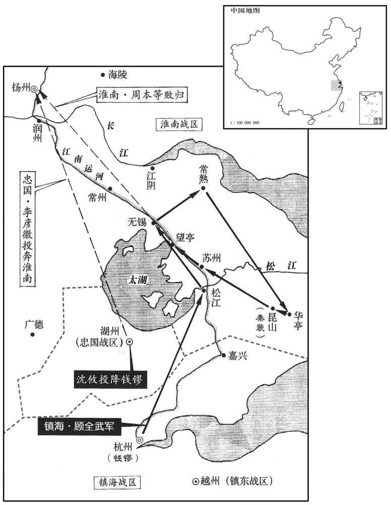
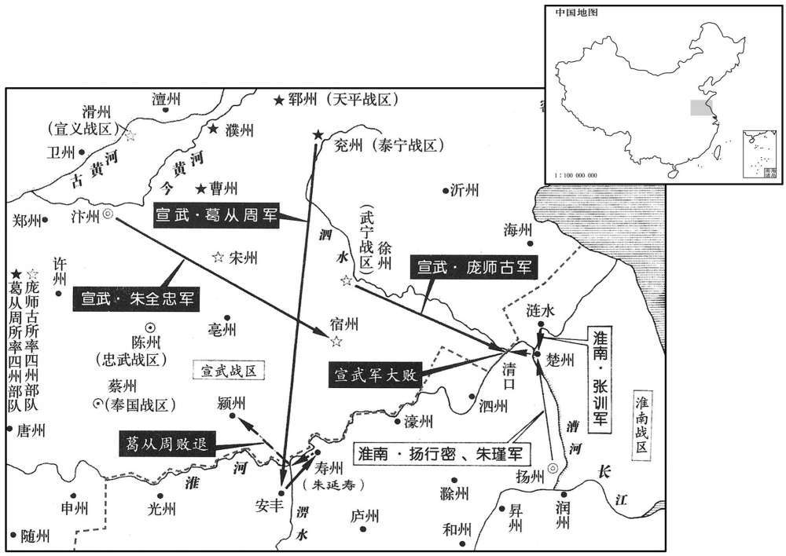

公元897年资治通鉴：本年记事、原文与白话对照
按原书编年位置阅读；追叙和史论不等于本年发生的事件。白话采用所据译本，缺译不以生成译文补齐。
卷261 · 本年记事
公元897年 · 唐昭宗圣穆景文孝皇帝干宁四年
干宁四年〔（丁巳、八九七）〕
上传原文的注释括号有异常，字符原样保留；无法可靠划分的段落默认全文显示。
本年事件索引（现代整理）
- 韩建胁迫昭宗解除诸王兵权、裁撤殿后四军，昭宗立德王为太子
- 庞师古、葛从周攻克郓州，朱瑄夫妇被俘
- 朝廷撤销孙偓凤翔行营职务
- 钱镠派杜棱救婺州，安仁义攻睦州未克
- 朱全忠进入郓州，任庞师古为天平留后
- 葛从周攻下兖州，朱瑾奔投杨行密
- 朱全忠纳朱瑾之妻，斩杀朱瑄并吞并多州
- 杨行密接纳朱瑾、史俨、李承嗣，淮南军势增强
- 王建派华洪、王宗佑率五万军攻东川
- 唐昭宗大赦天下
- 昭宗祭祀行庙
- 王建军攻克渝州、泸州，打通峡路
- 西川军击败凤翔援军，擒获李继昭
- 朝廷罢免孙偓、朱朴宰相职务
- 朝廷任杨行密为江南诸道行营都统讨伐杜洪
- 张佶攻克邵州，擒获蒋勋
- 朱全忠安排葛从周、朱友裕、庞师古分别镇守泰宁、天平、武宁
- 王珙攻打王珂，李克用派军解河中之围
- 朝廷改感义军为昭武军，任苏文建为节度使
- 朝廷任李继瑭为匡国节度使
- 朝廷派李洵调解王建与顾彦晖
- 顾全武率水军救援嘉兴，大败淮南军
- 朱友恭攻黄州，睢章弃城退守武昌寨
- 顾全武击破淮南十八营，田頵败退湖州
- 韩建诬告并贬斥刑部尚书张祎等人
- 朝廷加封崔洪为同平章事
- 朱友恭攻克武昌寨、黄州，俘获瞿章
- 王建命张琳留守成都，自率军攻东川
- 钱镠赴越州接受镇东节度使旌节
- 朝廷贬王建为南州刺史，任李茂贞为西川节度使、覃王嗣周为凤翔节度使
- 王建攻克梓州南寨，俘获李继宁
- 李茂贞拒绝交出凤翔，包围覃王嗣周
- 朝廷在容州设置宁远军，任盖寓为节度使
- 朝廷加封成汭为侍中
- 韩建致书李茂贞，李茂贞解除对奉天的包围
- 朝廷将李继徽由天雄节度使改任静难节度使
- 钱镠返杭后派顾全武收复苏州诸县
- 刘仁恭拒绝按李克用要求出兵，并拘禁河东使者，李克用发兵征讨
- 昭宗欲亲征李茂贞，因宰相力谏而作罢
- 韩建与刘季述矫诏杀害十六宅十一位宗王
- 朝廷贬斥孙偓、朱朴及荐举朱朴的何迎
- 王建与顾彦晖交战五十余次，王建采纳周德权之策分化东川诸将
- 李克用攻安塞军遭幽州军伏击，大败撤退
- 湖州将领沈攸接管州城归附钱镠
- 朝廷任张鐇为凤翔西北行营招讨使
- 昭宗复任王建为西川节度使，恢复李茂贞姓名与官爵
- 朱全忠攻杨行密，分兵围攻扬州、寿州
- 李继瑭惧怕朝廷征讨李茂贞，逃奔凤翔，韩建兼领两镇
- 侯绍等将领率遂州、合州军民及凤翔援军归降王建
- 刘仁恭求任统帅讨伐李克用，朝廷不许，朱全忠为其请加宰相衔
- 昭宗册封皇子秘、祚、祺为景王、辉王、祁王
- 朝廷加封张鐇为同平章事
- 杨行密、朱瑾率军迎战汴军于楚州，淮南军决水大败汴军
- 杨行密设宴犒赏诸将，表李承嗣为镇海节度使
- 昭宗立何淑妃为皇后
- 王潮去世，其弟王审知继掌福建军府
- 王建自梓州返回成都
- 王建拒绝回诏南诏，称其不足为患
- 王建整顿黎、雅边防并杀死泄露军情的三蛮首领
- 张道古上疏指出朝廷危局，昭宗将其贬官

本年形势与背景参考图

本年形势与背景参考图

本年形势与背景参考图

本年形势与背景参考图
春，正月，甲申，韩建奏：「防城将张行思等〔张行思，华州防城将也。将，即亮翻。〕告睦、济、韶、通、彭、韩、仪、陈八王〔皆嗣王也。睦、韶、韩，代宗之后；彭，肃宗之后；陈，文宗之后；史皆逸其名及其世系。〕谋杀臣，劫车驾幸河中。」建恶诸王典兵，〔恶，乌路翻。〕故使行思等告之。上大惊，召建谕之；建称疾不入。令诸王诣建自陈，建表称：「诸王忽诣臣理所，不测事端。〔建言诸王为变，事出不测也。〕臣详酌事体，不应与诸王相见。」又称：「诸王当自避嫌疑，不可轻为举措。陛下若以友爱含容，请依旧制，令归十六宅，妙选师傅，教以诗书，不令典兵预政。」〔援开元、天宝旧制，不令诸王出合。〕且曰：「乞散彼乌合之兵，用光麟趾之化。」〔诗序曰：关雎之化行，虽衰世之公子，皆信厚如麟趾之时。〕建虑上不从，引麾下精兵围行宫，〔以兵胁君。〕表疏连上。〔上，时掌翻。〕上不得已，是夕，诏诸王所领军士并纵归田里，诸王勒归十六宅，其甲兵并委韩建收掌。建又奏：「陛下选贤任能，足清祸乱，何必别置殿后四军！〔四军，即安圣、捧宸、保宁、宣化也。置见上卷上年。〕显有厚薄之恩，乖无偏无党之道。〔书曰：无偏无党，王道荡荡。韩建安识书语，李巨川教之耳，宜其不免于诛也。一本「厚」下更有「有」字。〕且所聚皆坊市无赖奸猾之徒，平居犹思祸变，临难必不为用，〔难，乃旦翻。〕而使之张弓挟刃，密迩皇舆，臣窃寒心，乞皆罢。」诏〔【章：十二行本「诏」上有「遣」字；乙十一行本同；张校同；孔本有「遣」字，无「亦」字。】〕亦从之。于是殿后四军二万余人悉散，天子之亲军尽矣。捧日都头李筠，石门扈从功第一，〔石门扈从事见上卷二年。从，才用翻。〕建复奏斩于大云桥。〔复，扶又翻。大云桥，在华州大云寺前。武后时令天下诸州各置大云寺以藏大云经，着受命之符也。〕建又奏：「玄宗之末，永王璘暂出江南，遽谋不轨。〔事见肃宗纪至德元载、二载。〕代宗时吐蕃入寇，光启中朱玫乱常，皆援立宗支以系人望。〔谓吐蕃立广武王承宏、朱玫立襄王熅也，事各见前纪。援，于元翻。〕今诸王衔命四方者，乞皆召还。」〔指言延王戒丕等。〕又奏：「诸方士出入禁庭，眩惑圣听，宜皆禁止，无得入宫。」〔指言许岩士等。〕诏悉从之。建既幽诸王于别第，知上意不悦，乃奏请立德王为太子，欲以解之。丁亥，诏立德王佑为皇太子，仍更名裕。〔更，工衡翻。考异曰：「勤王录曰：「公以储副之设，国之大本，上表云云，敕宜从允，时正月十一日也。当四日之间，而储君奉冢祀，宗室归藩邸，逢头突鬓之士不入于禁门，文成、五利之徒不陈其左道，君父开悟，遐迩咏歌，入震惊，市无易肆，公之力也。」李巨川著书，矫诬善恶乃至于此！今从实录。〕
春季，正月，甲申（初八），韩建向朝廷上奏说：“华州防城将张行思等控告皇室的睦、济、韶、通、彭、韩、仪、陈八王图谋杀害我，要劫持皇上的车驾到河中去。”韩建憎恨各王掌管军队，因此指使张行思等控告他们。昭宗接到韩建的表章大为惊慌，召见韩建，想向他说明，韩建以有病为托词拒不前来。唐昭宗又命令各王到韩建那里去自行陈述，韩建上表道：“各王若忽然来我的住所，变乱之事难以揣测。我仔细斟酌这件事，不应当和各王见面。”韩建又说：“各王应当自动避开嫌疑，不可轻举妄动。陛下如果因为同祖同宗的友爱之情而宽容他们，就请依照旧制，命令诸王回到十六宅，精心挑选师傅，教他们学习诗文书画，而不让他们掌管军队干预朝政。”韩建并且说：“请求解散各王手下的乌合之众，以光大大唐皇室子孙的教化。”韩建担心唐昭宗不依从他的意见，就带领手下精壮士兵围困昭宗的行宫，表章奏疏接二连三地向朝廷呈递。昭宗不得已，在这天傍晚，诏令各王所管领的军中士兵全都解散遣回田间故里，强迫诸王回到十六宅，各王原有的盔甲兵器全部交给韩建掌管。韩建又上奏说：“陛下挑选贤良任用能人，这样足可以清除祸患平定战乱，何必另外设置安圣、捧宸、保宁、宣化这四支亲军呢！显然皇恩有厚薄亲疏之分，与没有偏向没有私党这样的王道相背离。况且这四支陛下亲军里，聚集的都是市镇里巷中游手好闲奸邪狡猾的无赖，他们的平静安居的时候还企图作乱惹祸发动变乱，当朝廷遇到艰难处境他们一定不会为陛下效力的，可是现在却让这帮人拉弓拔刀，紧紧地跟随陛下的车驾，我私下里为陛下担惊受怕，请求立即把亲军全部解散。”昭宗颁下诏书，又依从了韩建的意见。于是，护卫昭宗的四支军队二万余人全部解散，天子的亲军完全裁撤了。捧日都头李筠，当初在石门跟随护卫昭宗，功劳堪数第一，韩建又上奏朝廷，将李筠在华州大云桥斩杀。韩建接着又向昭宗奏道：“玄宗末年，永王李暂时调出京师到江南任职，马上就背叛朝廷图谋不轨。代宗时，吐蕃侵入，拥立广武王李承宏。光启年间，朱玫叛逆作乱，拥立襄王李。他们都是靠着拥立皇族宗室的分支来笼络民心。现在奉陛下之命在各地的皇室诸王，请求把他们全都召回朝廷。”韩建还奏称：“那些鼓吹仙术的方士在皇宫出出进进，迷惑皇帝的耳目，应当一律禁止，不许他们进入皇宫。”昭宗下诏全都依从韩建的奏请。韩建把皇室各王幽禁在其他府第后，知道昭宗心中不高兴，便上呈奏章请求立德王为太子，想以此来缓解。丁亥（十一日），昭宗颁下诏令，立德王李为皇太子，按成制改名为李裕。
庞师古、葛从周并兵攻郓州，朱瑄兵少食尽，不复出战，但引水为深壕以自固。辛卯，师古等营于水西南，命为浮梁。癸巳，潜决濠水。丙申，浮梁成，师古夜以中军先济。瑄闻之，弃城奔中都，〔按九域志，中都县在郓州东南六十里。〕葛从周逐之，野人执瑄及妻子以献。〔僖宗中和二年，朱瑄得郓州，至是而亡。考异曰：薛居正五代史梁太祖纪：「辛卯，营于济水之次，庞师古令诸将撤木为桥。乙未夜，师古以中军先济，朱瑄弃壁夜走，葛从周擒瑄并妻男以献。」按济水自王莽时大旱，不复能绝河而南，自是河南无济水。编遗录曰：「五月，遣骑于郓州军前追从周，径往洹水董师，以代侯言，师古留攻郓。」梁太祖实录：「四年正月，复以洹水之师大举伐郓，十五日辛卯，营其西南河外，庞师古命诸将撤木为桥以图宵济。癸巳，前军以心膂百人盗决河口，甲午，浮桥集水次。乙未夜，师古中军先济，声振壁内。朱瑄闻之，弃壁走。」编遗录：「四年正月己卯，朱瑄兵少粮尽，不敢出战，然深沟高垒，难越也。从周、师古乃取清河内小舟，采野葛草茅，索之以为巨缆，乃于其墙南建浮桥。丙申，功就，我师渡桥，朱瑄奔遁。」皆不云济水。师古去年三月己败郓兵于马颊，追至西门，据故洛亭子为寨。乙未夜先济，盖郓城下清河水，疑朱瑄引之以环城固守，故师古等为浮桥以济师。河既可决，明非自然之水也。旧纪：「癸未，庞师古陷郓州，朱瑄与妻荣氏溃围走。瑄至中都，为野人所杀，荣氏俘于军。」新纪：「丙申，全忠陷郓州。」实录：「二月，丙午朔，陷郓州，瑄至中都，为乱兵所杀，妻荣至汴为尼。」据薛史，辛卯营于济水，则癸未郓未破也。新纪云丙申陷郓，实录二月，盖约奏到。今从编遗录、新纪。〕
庞师古、葛从周联合军队攻打郓州的朱，朱人马较少粮食也吃尽，便不再出城交战，只是引水灌满堑壕自行固守。辛卯（十五日），庞师古等在水流的的西南安设营寨，命令士兵建造浮桥。癸巳（十七日），庞师古的士兵偷偷挖开堑壕放水。丙申（二十日），浮桥造成，庞师古夜里派遣中军首先越过堑壕。朱听说后放弃郓州城逃奔中都县，葛从周随即追击，乡下农人抓获朱和他的妻子儿子交送葛从周。
己亥，罢孙偓凤翔四面行营节度等使，〔赦李茂贞，故罢凤翔四面行营。〕以副都统李思谏为宁塞节使。〔按方镇表，光化元年，更延州保塞节度为宁塞节度。〕
已亥（二十三日），朝廷免去孙的凤翔四面行营节度等使的官职，任命副都统李思谏为宁塞节度使。
钱镠使行军司马杜棱救婺州。安仁义移兵攻睦州，不克而还。〔安仁义攻婺州见上卷上年。还，从宣翻，又如字。〕
钱派令行军司马杜棱救援婺州。围攻婺州的安仁义于是调动军队去攻打睦州，结果没有攻克而率众返回。
朱全忠入郓州，以庞师古为天平留后。〔考异曰：旧纪、梁太祖实录、薛居正五代史师古传皆云师古为郓州留后。编遗录、薛史梁纪皆云「友裕」。按编遗录，「三月，丙子，以友裕为郓州留后，师古为徐州留后。」盖初以师古守郓州，后以友裕代之，而徙师古于徐州也。〕
朱全忠进入郓州，任命庞师古为天平留后。
朱瑾留大将康怀贞守兖州，与河东将史俨、李承嗣掠徐州之境以给军食。〔九域志：兖州南一百一十里，即徐州界。〕全忠闻之，遣葛从周将兵袭兖州。怀贞闻郓州已失守，汴兵奄至，遂降。二月，戈申，从周入兖州，获瑾妻子。朱瑾还，无所归，帅其众趋沂州，刺史尹处宾不纳，走保海州，〔降，户江翻。帅，读曰率。趋，七喻翻。九域志，兖州三百四十五里，东至沂州。沂，古琅邪也。沂州东至海州一百八十里。〕为汴兵所逼，与史俨、李承嗣拥州民渡淮，奔杨行密。〔光启二年，朱瑾取兖州，至是而败。〕行密逆之于高邮，表瑾领武宁节度使。〔领，遥领也。〕
朱瑾留下大将康怀贞守卫兖州，他自己与河东李克用的将领史俨、李承嗣一起到徐州境内抢掠以供给军需粮食。朱全忠得知，便派葛从周带领军队袭击兖州。康怀贞得知郓州已经失守，朱全忠的汴州军队突然来到，于是向葛从周投降。二月，戊申（初三），葛从周进入兖州城，抓获朱瑾的妻子、儿子。朱瑾返回兖州时，没有归处，便率领手下人马奔往沂州，沂州刺史尹处宾不接纳，珠瑾无奈又奔往海州固守，又受到汴州军队的进攻逼迫，最后与史俨、李承嗣裹挟海州的百姓渡过淮水，投奔杨行密。杨行密在高邮迎接朱瑾，并向朝廷表请任命朱瑾遥领武宁节度使。
全忠纳瑾之妻，引兵还，张夫人逆于封丘，〔九域志：封丘县，在汴州北六十里。〕全忠以得瑾妻告之。夫人请见之，瑾妻拜，夫人答拜，且泣曰：「兖、郓与司空同姓，约为兄弟，以小故恨望，起兵相攻，使吾姒辱于此。他日汴州失守，吾亦如吾姒之今日乎！」〔姒，详里翻。长妇曰姒，又兄弟之妻相呼曰姒，互相尊称之辞也。〕全忠乃送瑾妻于佛寺为尼，斩朱瑄于汴桥。于是郓、齐、曹、棣、兖、沂、密、徐、宿、陈、许、郑、滑、濮皆入于全忠。〔郓、齐、曹、棣，天平军；兖、沂、密，泰宁军；徐、宿，感化军；陈、许，忠武军；郑、滑、濮，宣义军。此五镇之地也。〕惟王师范保淄青一道，亦服于全忠。李存信在魏州，闻兖、郓皆陷，引兵还。
朱全忠收纳的朱瑾的妻子，带领军队返回汴州，朱全忠的妻子张夫人在封丘县迎接，朱全忠把收纳朱瑾妻子的事告诉张夫人。张夫人请求会见朱瑾妻子，朱瑾妻子拜见张夫人，张夫人以同样的礼节答谢，并且流着眼泪说：“兖州的朱瑾、郓州的朱与司空朱全忠是同姓，他们相约结为兄弟，因为很小的缘故而产生怨恨，竟兵戎相见互相攻打，以致使嫂子你受到这样的侮辱。将来有一天汴州失守，我也要象嫂子你今天这样了！”朱全忠这才把朱瑾妻子送到佛寺里做尼姑，在汴桥斩杀朱。于是，天平节度使管辖的郓州、齐州、曹州、棣州，秦宁节度使管辖的兖州、沂州、密州，感化节度使管辖的徐州、宿州，忠武节度使管辖的陈州、许州，宣义节度使管辖的郑州、滑州、濮州，全都归属朱全忠统管。只有王师范保存淄青一道，也服从了朱全忠。这时，李存信在魏州，他听说兖州、郓州都被朱全忠攻占，便带领人马返回晋阳。
淮南旧善水战，不知骑射，及得河东、兖、郓兵，军声大振。史俨、李承嗣皆河东骁将，李克用深惜之，遣使间道诣杨行密请之；〔间，古苋翻。〕行密许之，亦遣使诣克用修好。〔好，呼到翻。〕
淮南节度使杨行密的军队以往擅长水上作战，而不熟悉骑马射箭，等到杨行密接收了河东李克用、兖州朱瑾、郓州朱人马，军队声势大为振作。史俨、李承嗣都是河东节度使李克用手下的勇猛战将，李克用对他们到杨行密那里很是惋惜，派遣使者从小道前去向杨行密请求放回史俨、李承嗣。杨行密同意，也派出使者到李克用那里重修和好。
戊午，王建遣邛州刺史华洪、彭州刺史王宗佑将兵五万攻东川，〔邛，渠容翻。华，户化翻。〕以戎州刺史王宗谨为凤翔西面行营先锋使，败凤翔将李继徽等于玄武。〔玄武，汉氐道县，晋改曰玄武，唐袑属梓州，宋朝改曰中江，在梓州西九十里。败，补迈翻。〕继徽本姓杨，名崇本，茂贞之假子也。
戊午（十三日），西川节度使王建派遣邛州刺史华洪、彭州刺史王宗带领军队五万攻打东川节度使顾彦晖，任命戎州刺史王宗谨为凤翔西南行营先锋使，在梓州玄武县打败凤翔节度使李茂贞的将领李继徽等。李继徽本来姓杨，名崇本，是李茂贞的养子。
己未，赦天下。〔考异曰：异录：「降德音，曲赦天下。」云德音即非赦。既云曲赦即不及天下。实录误也。〕
己未（十四日），朝廷诏令天下大赦。
上飨行庙。〔时驻跸华州，太常礼院请权立行庙以备告飨。〕
唐昭宗到行庙祭献。
庚申，王建以决云都知兵马使王宗侃为应援开峡都指挥使，将兵八千趋渝州；决胜都知兵马使王宗阮为开江防送进奉使，将兵七千趋泸州。辛酉，〔【章：十二行本「酉」作「未」；乙十一行本同。】〕宗侃取渝州，降刺史牟崇厚。癸酉，宗元拔泸州，斩刺史马敬儒，峡路始通。〔渝、泸，皆东川巡属。王建志在广地，假通峡路进奉以为名耳。趋，七喻翻。〕
庚申（十五日），王建任命决云都知兵马使王宗侃为应援开峡都指挥使，带领军队八千奔赴渝州；任命决胜都知兵马使王宗阮为开江防送进奉使，带领军队七千奔赴泸州。辛未（二十六日），王宗侃攻取渝州，渝州刺史牟崇厚投降。癸酉（二十八日），王宗阮攻克泸州，斩杀泸州刺史马敬儒，峡路开始打通。
凤翔将李继昭救梓州，留偏将守剑门，西川将王宗播击擒之。
凤翔节度使李茂贞的将领李继昭救援梓州，留下属将据守剑门，西川将领王宗播袭击擒获了他。
乙亥，门下侍郎、同平章事孙偓罢守本官，中书侍郎、同平章事朱朴罢为秘书监。朴既秉，所言皆不效，〔朱朴自诡月余可致太平见上卷上年。〕外议沸腾。太子詹事马道殷以天文，将作监许岩士以医得幸于上，韩建诬二人以罪而杀之，且言偓、朴与二人交通，故罢相。〔马道殷、许岩士在上左右，二相因之以白事，此必有之。〕
乙亥（三十日），朝廷将门下侍郎、同平章事孙罢去官衔，只留本职，将中书侍郎、同平章事朱朴罢职贬为秘书监。朱朴充任宰相主持朝政后，事先所说的话都没有见效，朝外议论纷纷。太子詹事马道殷因为通晓天文，将作监许岩士因为懂医而得到唐昭宗宠爱，韩建诬陷马道殷、许岩士二人有罪而斩杀了他们，并且又说孙、朱朴与这两个人相互交往窜通信息，因此将他们罢去了宰相官职。
诏以杨行密为江南诸道行营都统，以讨武昌节度使杜洪。〔按新书洪传。洪附朱全忠，绝东南贡献路，命杨行密讨之者以此。〕
唐昭宗颁下诏令，任命杨行密为江南诸道行营都统，以便讨伐武昌节度使杜洪。
张售克邵州，擒蒋勋。〔潭兵攻蒋勋事浆上卷三年正月。，售巨乙翻。〕
两版字句有差异，建议核对原文。
张佶攻克邵州，擒获邵州刺史蒋勋。
三月，丙子，朱全忠表曹州刺史葛从周为泰宁留后，朱友裕为天平留后，庞师古为武宁留后。〔朱全忠表以三镇授三将以树党。此时盖复改感化为武宁。〕
三月，丙子（初一），朱全忠向朝廷进呈表请求任命曹州刺史葛从周为泰宁留后，朱友裕为天平留后，庞师古为武宁留后。
保义节度使王琪攻护国节度使王珂，珂求援于李克用，珙求援于朱全忠。宣武将张存敬、杨师厚败河中兵于猗氏南；河东将李嗣昭败陕兵于猗氏，又败之于张店，遂解河中之围。〔败，补迈翻。陕，失冉翻。〕师厚，斤沟人，〔九域志，颍州万寿县有斤沟镇。万寿，唐汝阴县之百尺镇也，宋朝开宝六年置县。嗣昭，克用弟克柔之假子也。
两版字句有差异，建议核对原文。
保义节度使王珙攻打护国节度使王珂，王珂向李克用求援，王珙则向朱全忠求援。宣武军将领张存敬、杨师厚在猗氏南部打败河中军队；河东军队将领李嗣昭在猗氏打败陕州人马，接着又在张店再次打败陕州军队，于是解除了对河中的围困。杨师厚是斤沟镇人，李嗣昭是李克用胞弟李克柔的养子。
更名感义军曰昭武，〔更，工衡翻。〕治利州，以前静难节度使苏文建为节度使。〔难，乃旦翻。〕
朝廷诏令，将感义军改名为昭武军，节度使司设在利州，任命以前的静难节度使苏文建为昭武节度使。
夏，四月，以同州防御使李继瑭为匡国节度使。〔考异曰：实录：「赐同州号匡国军，以防御使李继瑭为匡国节度使。」按新方镇表，干宁二年，赐同州号匡国军。王行约已尝为匡国节度使，盖行约死，继瑭但为防御使，今始复旧名耳。〕继瑭，茂贞之养子也。
夏季，四月，朝廷任命同州防御使李继瑭为匡国节度使。李继瑭是李茂贞的养子。
以右谏议大夫李洵为两川宣谕使，和解王建及顾彦晖。
朝廷任命右谏议大夫李洵为两川宣谕使，前往劝说西川节度使王建与东川节度使顾彦晖和解。
辛亥，钱镠遣顾全武等将兵三千自海道救嘉兴，己未，至城下，击淮南兵，大破之。〔淮南围嘉兴，始上卷二年。〕
辛亥（初六），钱派遣顾全武等带领军队三千乘船由海道前往救援嘉兴，己未（十四日），来到嘉兴城下，攻打正在围攻嘉兴的淮南军队，结果把淮南军队打得大败。
杜洪为杨行密所攻，求救于朱全忠，全忠遣其将聂金掠泗州，〔聂，尼辄翻，姓也。〕朱友恭攻黄州。行密遣右黑云都指挥使马珣等救黄州。黄州刺史睢章闻友恭至，弃城，拥众南保武昌寨。〔武昌，汉古县，唐属鄂州。九域志：在州东北一百八十里，今置寿昌军。〕
杜洪受到杨行密的进攻，向朱全忠求救，朱全忠派遣手下将领聂金掠扰泗州，命朱友恭攻打黄州。杨行密则派遣右黑云都指挥使马等救援黄州。黄州刺史瞿章听说朱友恭前来，便放弃黄州城，裹挟民众向南逃往武昌寨固守。
癸亥，两浙将顾全武等破淮南十八营，虏淮南将士魏约等三千人。淮南将田頵屯驿亭埭，〔埭，徒耐翻。〕两浙兵乘胜逐之。甲戌，頵自湖州奔还，〔自嘉兴退军，取道湖州，还宣州。〕两浙兵追败之，〔败，补迈翻。〕頵众死者千余人。
癸亥（十八日），两浙军队将领顾全武等攻破围攻嘉兴的淮南军队十八个营寨，虏获淮南军队将士魏约等三千人。淮南军队将领田当时驻扎在驿亭埭，两浙军队乘胜驱逐田。甲戌（二十九日），田从湖州逃回，两浙军队在后面紧追，田军队大败，死亡达一千余人。
韩建恶刑部尚书张祎等数人，皆诬奏，贬之。〔恶，乌路翻。袆，吁韦翻。考异曰：实录：「贬刑部尚书张祎、赵崇、苏循等为衡州司马。韩建恶之，诬奏贬焉。」祎等必不皆为刑部尚书，皆贬衡州司马。实录误也。〕
韩建憎恨刑部尚书张等几个人，他上呈奏章，全都进行诬陷，结果张等人被朝廷贬职。
五月，加奉国节度使崔洪同平章事。
五月，朝廷加封奉国节度使崔洪为同平章事。
辛巳，朱友恭为浮梁于樊港，〔武昌西三里有樊山，山下有樊溪，注于江，谓之樊口。朱友恭盖跨江为浮梁，抵樊口，以攻武昌也。〕进攻武昌寨，壬午，拔之，执瞿章，遂取黄州；考异曰：薛居正五代史梁纪：「五月丁丑，朱友恭遣使上言，大破淮寇于武昌，收复黄、鄂二州。」新纪：「壬午，全忠陷黄州，刺史瞿章死之。」朱友恭传云翟章，十国纪年作瞿章。吴录云：执刺史瞿章，当可据。〕马珣等皆败走。
本段缺少可靠对应白话，原文完整保留；未使用生成译文。
丙戌，王建以节度副使张琳守成都，〔张琳，王建之腹心。建之攻陈敬瑄也，亦使之守邛州。〕自将兵五万攻束川。更华洪姓名曰王宗涤。〔华洪累战有功，王建于是养以为子以收其力用，然杀洪之心盖已萌于此时矣。华，户化翻。〕
丙戌（十二日），西川节度使王建命令节度副使张琳据守成都，自己带领军队五万攻打东川节度使顾彦晖。王建把华洪的姓名改为王宗涤。
六月，己酉，钱镠如越州，受镇东节钺。
六月，己酉（初五），钱到达越州，接受镇东节度使的旌旗节。
李茂贞表：「王建攻东州，连兵累岁，不听诏命。」〔王建岂特攻东川哉！李茂贞山南巡属诸州，建取之亦多矣；力不能制，欲挟天子之令以临之。」甲寅，贬建南州刺史。〔新志：武德三年，开黔南蛮，置南州。宋白曰：南州，战国时为巴国界，秦则巴郡之地，汉为江州之境。唐武德三年，割渝州之东界，置南州。〕乙卯，以茂贞为西川节度使。以覃王嗣周为凤翔节度使。
两版字句有差异，建议核对原文。
李茂贞上表朝廷说：“王建一再攻打东川，多年以来兴兵作乱，拒不听从朝廷的诏令。”甲寅（初十），唐昭宗颁下诏令，把王建贬为南州刺史。乙卯（十一日），朝廷任命李茂贞为西川节度使。同时任命覃王李嗣周为凤翔节度使。
癸亥，王建克梓州南寨，执其将李继宁。丙寅，宣谕使李洵至梓州，〔四月，李洵受命而使，六月始至。〕己巳，见建于张杷砦，建指执旗者曰：「战士之情，不可痔也。」
癸亥（十九日），王建攻克梓州南寨，抓获南寨将领李继宁。丙寅（二十二日），朝廷派出的宣谕使李洵到达梓州，己巳（二十五日），李洵在张杷砦会晤王建，王建指着手拿旗帜的人说：“攻打东川是军中士兵的意意，不能强夺。”
覃王赴镇，李茂贞不受代，〔李茂贞之狡悍，岂肯以凤翔授人，涉险而争蜀邪！围覃王于奉天。
本段缺少可靠对应白话，原文完整保留；未使用生成译文。
置宁远军于容州，以李克用大将盖寓领节度使。〔李克用之平王行瑜也，盖寓以功领容管观察使，今升领节度使。〕
朝廷在容州设置宁远军，任命李克用的大将盖寓兼任宁远节度使。
秋，七月，加荆南节度使成汭兼侍中。
秋季，七月，朝廷加封荆南节度使成兼侍中。
韩建移书李茂贞；茂贞解奉天之围，覃王归华州。
韩建给李茂贞送去书信，李茂贞于是解除对奉天的围困，覃王李嗣周回到华州。
以天雄节度使李继徽为静难节度使。〔李继徽自秦州徙邠州，邠宁亦为李茂贞有矣。难，乃旦翻。」
本段缺少可靠对应白话，原文完整保留；未使用生成译文。
庚戌，钱镠还杭州，〔自越还杭。〕遣顾全武取苏州；乙未，拔松江；〔松江，在苏州南四十里，淮南立寨以守之。〕戊戌，拔无锡；〔无锡，汉县，唐属常州。九域志，在州东九十一里。〕辛丑，拔常熟、华亭。〔宋白曰：常熟县，后汉至吴为司盐都尉，晋置南沙县，梁置常熟县，今昆山县东一百三十里，常熟故城是也。九域志，在苏州北七十五里。天宝十载，分嘉兴置华亭县，属苏州，在州西南；今属秀州。〕
庚戌（疑误），钱从越州返回杭州，派顾全武攻取苏州；乙未（二十二日），攻克松江；戊戌（二十五日），攻占无锡；辛丑（二十八日），又占据常熟、华亭。
初，李克用取幽州，〔见二百五十九卷干宁元年。〕表刘仁恭为节度使，留戍兵及腹心将十人典其机要，租赋供军之外，悉输晋阳。及上幸华州，克用征兵于仁恭，又遗成德节度使王镕、义武节度使王郈书，〔遗，唯季翻。郜，音告。〕欲与之共定关中，奉天子还长安。仁恭辞以契丹入寇，〔洪遵曰：契丹之读如吃，惟新唐书有音。今从欺讫翻。〕须兵扞御，请俟虏退，然后承命。克用屡趣之，〔趣，读曰促。〕使者相继，数月，兵不出。克用移书责之，仁恭抵书于地，慢骂，囚其使者，欲杀河东戍将，戍将遁逃获免。〔克用留兵戍幽州，见上卷干宁二年。〕克用大怒，八月，自将击仁恭。〔为克用计者，先举河东之甲勤王，事定之后，然后移兵临燕以问罪，刘仁恭安所逃其死乎！不知出此，遽兴忿兵，其败宜矣。〕
当初，李克用攻取幽州，向朝廷进呈表章请求任命刘仁恭为节度使，留下戍兵和亲信将领十人掌管机要事务，幽州一带的田租赋税除了供给军需之外，全部运送到晋阳。等到唐昭宗避难前往华州后，李克用向刘仁恭征调军队，又给成德节度使王熔、义武节度使王郜送去书信，想和他们一起平定关中的叛乱，奉送天子返回京师长安。刘仁恭以契丹人正在入侵抢掠，需要有军队防备，请等契丹人退走后，然后再接受李克用的命令，予以推辞。李克用再三催促，派出的使者接二连三地到达幽州，可是几个月过去，刘仁恭的军队还是不出发。李克用送去书信责备刘仁恭，刘仁恭把信扔在地上，大肆谩骂，并把派来的使者囚禁起来，还想杀害留在幽州驻守的河东将领，那些河东将领立即逃跑才免遭杀身之祸。李克用勃然大怒，八月，亲自率领军队攻打刘仁恭。
上欲幸奉天亲讨李茂贞，令宰相议之；宰相切谏，乃止。〔议者率谓昭宗忿不思难，然亦可悲矣。〕
昭宗想前往奉天亲自督率军队讨伐李茂贞，命令宰相商议这件事。宰相极力劝阻，昭宗才打消了亲征的打算。
延王戒丕还还自晋阳，〔戒丕使晋阳见上卷上年。〕韩建奏：「自陛下即位以来，与近辅交恶，〔近辅，邠、岐、同、华也。〕皆因诸王典兵，凶徒乐祸，〔乐，音洛。〕致銮舆不安。比者臣奏罢兵权，〔比，毗至翻，近也。〕实虑不测之变。今闻延王、覃王尚苞阴计，愿陛下圣断不疑，〔断，丁乱翻。〕制于未乱，〔周书云：制治于未乱。建奏引之，李巨川之辞也。〕则社稷之福。」〔韩建欲杀诸王久矣，惮李克用，故未敢发。延王既还，知克用之兵不能至，故决请杀之。〕上曰：「何至于是！」数日不报。建乃与知枢密刘季述矫制发兵围十六宅，诸王被发，或缘垣，或升屋，呼〔【章：十二行本「升」作「登」；「呼」上有「或升木」三字；乙十一行本同；张校同，云无注本脱误与吴本同。】〕曰：「宅家救儿！」〔被，皮义翻。呼，火故翻。唐末宫中率称天子曰宅家。〕建拥通、沂、睦、济、韶、彭、韩、陈、覃、延、丹十一王至石堤谷，尽杀之，〔石堤谷，在华州西。欧阳修集古录云：殽坑君祠，今谓之五部神庙，其像有石堤西戍树谷五楼先生、东台御史王剪将军，莫晓其义。其碑云：「石堤树谷，南通商、雒。」又云：「前世通利，吏民兴贵，有御史大夫、将军牧伯，故为立祠以报其功。」乃知五部之号，目汉有之。如此，则石堤者，石堤谷之神，五部神之一也。唐韩建杀诸王于石堤谷，盖此谷也。殽坑神祠，在华州郑县。考异曰：旧纪：「是日，通、覃以下十一王并其侍者皆为建兵所拥，至石堤谷，无长少，皆杀之。」唐补纪曰：「六宅诸王，准前商量，请置殿后都。韩建怨怒，进状争论，与诸王互说短长。上乃缚韩王克良已下十人送韩建府。建以棘刺围于大厅，经宿不与相见。军吏谏，遂请诸王归宫，散却殿后都。」新纪：「八月，韩建杀通王滋、沂王湮、韶王、彭王、嗣韩王、嗣韩王、嗣陈王、嗣覃王嗣周、嗣延王戒丕、嗣丹王允。」按旧纪韩建奏，睦王、济王、韶王、通王、彭王、韩王、仪王、陈王八人。新宗室传，初帝遣嗣延王戒丕，嗣丹王允往见李克用，又有覃王嗣周，则是十一人。新纪、传「仪」作「沂」。按昭宗子禋封沂王，不应更封宗室。旧纪仪王，恐可据。〕以谋反闻。
延王李戒丕从晋阳返回华州，韩建从奏说：“自从陛下即位以来，朝廷与靠近京师的藩镇关系恶化，这都是因为皇室各王掌管兵权，逞凶作恶之徒喜好惹祸生灾，使陛下的车驾不能安稳。近来我向朝廷奏请罢免各王的兵权，实在是担心会有难以预测的变乱。现在我听说延王李戒丕、覃王李嗣周正在酝酿阴谋诡计，希望陛下圣明果断毫不迟疑，在没有发生变乱前就采取措施，那就是大唐天下的福气了。”唐昭宗看了韩建的奏章说：“哪里至于这样呀！”几天过去都没有答复。韩建于是与知枢密刘季述假借朝廷的诏令发兵围攻各王的住所十六宅，诸王披头散发，有的攀援爬上墙头，有的登高跑到屋顶，狂呼道：“皇上快来救我！”韩建把通王、沂王、睦王、济王、韶王、彭王、韩王、陈王、覃王、延王、丹王这十一个王裹挟到华州西部的石堤谷，全部杀掉，然后向唐昭宗奏报说他们谋反因而处死。
贬礼部尚书孙偓为南州司马。秘书监朱朴先贬夔州司马，再贬郴州司户。〔考异曰：实录：「朴贬郴州司户。」薛廷珪凤阁书词有朴自秘书监责除蜀王傅、分司东都制云：「苞藏莫顾于朝纲，进见不由于相府。」复云：「犹希顾问之间，来挠澄清之化。」又贬渠州司马制云：「筝臣条奏，宪府极言，指陈负固之谋，忿嫉崇奸之计。」与此稍异。今从实录。」朴之为相，何迎骤迁至右谏议大夫，至是亦贬湖州司马。〔何迎荐朱朴见上卷上年。〕
本段缺少可靠对应白话，原文完整保留；未使用生成译文。
王建与顾彦晖五十余战，九月，癸酉朔，围梓州。蜀州刺史周德权言于建曰：「公与彦晖争东川三年，士卒疲于矢石，百姓困于输挽。〔挽，音晚。〕东川群盗多据州县，彦晖懦而无谋，欲为偷安之计，皆陷以厚利，〔陷，徒滥翻。〕恃其救援，故坚守不下。今若遣人谕贼帅以祸福，〔帅，所类翻。〕来者赏之以官，不服者威之以兵，则彼之所恃，反为我用矣。」建从之，彦晖势益孤。德权，许州人也。
西川的王建与东川的顾彦晖大小交战五十多次，九月，癸酉朔（初一），王建围攻梓州。蜀州刺史周德权对王建说：“你与顾彦晖争夺东川已经三年，士兵对征战已感到疲惫，地方百姓对运输接送军需已感到困乏。东川的州县大多被一群强盗贼寇占据着，顾彦晖怯懦而没有智谋，想用苟且偷安的办法，对州县属官都用丰厚的利益来引诱笼络他们，倚仗他们的救援，而坚守梓州使我们不能攻克。现在你如果派人向贼寇的头目说明祸福利弊，对于前来附顺的人赏给官职，对于拒不服从的人就派出军队威逼，这样顾彦晖所依伏的势力，便反被我们利用了。”王建采纳了周德权的意见，于是顾彦晖的势力越来越孤单。周德权是许州人。
丁肚，李克用至安塞军，〔安塞军在蔚州之东，妫州之西。新志：幽州丁零川西南有安塞军。〕辛巳，攻之，攻之。幽州将单可及引骑兵至，〔单，上演翻，姓也；又都寒翻，亦姓也。元魏孝文帝改代北内入诸渴单氏为单氏。〕克用方饮酒，前锋白：「贼至矣！」克用醉，曰：「仁恭何在﹖」对曰：「但见可及辈。」克用瞋目曰：〔瞋，昌真翻。〕「可及辈何足为敌！」亟命击之。是日大雾，不辨人物，幽州将杨师侃伏兵于木瓜涧，〔据新书，木瓜涧亦在蔚州界。〕河东兵大败，失亡太半。〔史言李克用轻敌，又不得天时，故败。〕会大风雨震电，幽州兵解去。〔史言克用败而得免者亦天也。〕克用醒而后知败，责大将李存信等曰：「吾以醉废事，汝曹何不力争！」〔邢州之叛，莘县之溃，木瓜涧之败，皆李存信之罪也。克用终亲任之，可谓失刑矣。〕
丁丑（初五），李克用率领人马到达安塞军，辛巳（初九），李克用进攻安塞军。幽州的将领单可及带领骑兵赶到这里，李克用这时正在喝酒，前锋将士报信说：“幽州的贼寇来到了！”李克用喝得大醉，说；“刘仁恭在哪里？”手下人回答他说：“只看到单可及一伙人。”李克用瞪着眼说：“单可及这伙人哪里是我的对手！”当即下令向幽州军队发动进攻。这一天大雾弥漫，分辨不清人和物，幽州将领杨师侃在木瓜涧埋伏下军队，李克用的河东军队在交战中大败，丧失人马超过多半。适逢狂风暴雨电闪雷鸣，幽州军队于是解围离去。李克用醒酒后知道自己的人马吃了败仗，便责怪大将李存信等人说：“我因为喝醉酒而耽误大事，你们为什么不极力劝阻！”
湖州刺史李彦徽欲以州附于杨行密，〔去年杨行密表彦徽知湖州，故欲附之。〕其众不从；彦徽奔广陵，都指指挥使沈攸以州归钱镠。〔钱镠自此遂有湖州。〕
湖州刺史李彦徽想要献出湖州归附杨行密，他手下众人不依从；李彦徽逃奔广陵，湖州的都指挥使沈攸率领湖州归附钱。
以彰义节度使张琏为凤翔西北行营招讨使，以讨李茂贞。
朝廷任命彰义节度使张琏为凤翔西北行营诏讨使，以讨伐李茂贞。
复以王建为西川节度使、同平章事。加义武节度使王郈同平章事。削痔新西川节度使李茂贞官篾，复姓名宋文通。〔始以李茂贞之请而讨王建，既而又以茂贞拒命，赦王建而讨茂贞。朝廷号令，朝出而暮改，诸侯其孰尊而信之！皇威不振，自取之也。李茂贞赐姓名见二百五十六卷光启二年。〕
昭宗重新任命王建为西川节度使、同平章事。加封义武节度使王郜为同平章事。革除不久前任命的西川节度使李茂贞的官职爵位，恢复李茂贞原来的姓名宋文通。
朱全忠既得兖、郓，甲兵益盛，乃大举击杨行密，遣庞师古以徐、宿、宋、滑之兵七万壁清口，〔清口，即今之清河口。〕将趋扬州，〔趋，七喻翻；下同。〕葛从周以兖、郓、曹、濮之兵壁安丰，将趋寿州，〔安丰，汉六县，故城在县南；后汉置安丰县；至唐属寿州。九域志曰：安丰县，在州东南六十余里。盖唐之寿州，治寿春县，即六朝寿阳之地。五代之末，周世宗克寿州，徙治下蔡，故宋朝安丰在寿州东南。〕全忠自将屯宿州；淮南震恐。
朱全忠获得兖州、郓州之后，军队的势力更加强盛，于是大规模发动军队进攻杨行密，他派遣庞师古带领徐州、宿州、宋州、滑州的军队七万人在清口安设营垒，准备进军扬州，又派遣葛从周带领兖州、郓州、曹州、濮州的军队在安丰县设置营垒，准备进军寿州，朱全忠自己率领人马在宿州驻扎；淮南军队得知十分震惊恐慌。
匡国节度使李继瑭闻朝廷讨李茂贞而惧，韩建复从而摇之，〔复，扶又翻。〕继瑭奔凤翔。冬十月，以建为镇国、匡国两军节度使。〔韩建始兼有同、华。〕
匡国节度使李继瑭听说朝廷要讨伐李茂贞，十分惧怕，韩建又从中威逼他，李继瑭于是逃奔凤翔。冬季，十月，朝廷任命韩建为镇国、匡国两军节度使。
壬子，知遂州侯绍帅众二万，乙卯，知合州王仁威帅众千人，戊午，凤翔李继溥以援兵二千，皆降于王建。〔帅，读曰率。〕建攻梓州益急。庚申，顾彦晖聚其宗族及假子共饮，遣王宗弼自归于建；〔王宗弼为东川兵所擒事见上卷二年。〕酒酣，命其假子瑶杀己及同饮者，然后自杀。〔僖宗光启三年，顾彦朗得东川，传至弟彦晕，至是而灭。〕建入梓州，〔干宁二年，王建始攻东川，盖三年而后克之。〕城中兵尚七万人，建命王宗绾分兵徇昌、普等州，以王宗涤为东川留后。
壬子（初十），主持遂州事务的侯绍率领所部人马二万，乙卯（十三日），主持合州事务的王仁威带领手下一千人，戊午（十六日），凤翔将领李继溥带领增援队伍二千，都先后向王建投降。王建攻打梓州便更加猛烈。庚申（十八日），梓州城内的顾彦晖招聚他的宗族和养子共同饮酒，把从前擒获的西川将领王宗弼遣返到王建那里。顾彦晖开怀畅饮之后，命令养子顾瑶将自己和一同喝酒的人杀死，然后顾瑶本人自杀。王建于是进入梓州城，城内的军队还有七万人，王建命令王宗绾分兵前往昌州、普州等地巡行，又委任王宗涤为东川留后。
刘仁恭奏称：「李克用无故称兵见讨，本道大破其党于木瓜涧，请自为统帅以讨克用。」〔帅，所类翻。〕诏不许。又遗朱全忠书。〔遗，唯季翻。〕全忠奏加仁恭同平章事，朝廷从之。仁恭又遣使谢克用，陈去就不自安之意。克用复书略曰：「今公仗钺控兵，理民立法，擢士则欲其报德，选将则望彼酬思；己尚不然，人何足信！〔克用言仁恭背己，人亦将背之也。将，即亮翻。〕仆料猜防出于骨肉，嫌忌生于屏帷，持千将而不敢授人，捧盟盘而何词着誓！」
刘仁恭向朝廷上表奏称：“李克用无缘无故发动军队来讨伐我，我已经在木瓜涧将他的人马打得大败，现在我请求自己做统帅征伐李克用。”唐昭宗下诏不准。刘仁恭又给朱全忠送去书信。朱全忠便向朝廷奏请加封刘仁恭为同平章事，朝廷予以同意。刘仁恭又派遣使者前赴李克用那里道歉，陈述他与李克用分手而不能自安的心情。李克用给刘仁恭回信大略说道：“现在你凭借朝廷符节控制军队，管理百姓自立法度，提拔人才要让他报答你的恩德，选用将领希望他酬谢你的恩惠；而你自己就不是这样，对别人又怎么能够充分相信呢！我估计你会猜忌亲人骨肉，疑心身边的文武官员，手持利剑而不敢转授他人，那么你手捧盟誓之盘时在誓词里又能说些什么呢！”
甲子，立皇子秘为景王，祚为辉王，祺为祁王。
甲子（二十二日），昭宗颁发诏令，立皇子李秘为景王，李祚为辉王，李祺为祁王。
加彰义节度使张琏同平章事。
朝廷加封彰义节度使张琏为同平章事。
杨行密与朱瑾将兵三万拒汴军于楚州，别将张训自涟水引兵会之，〔干宁二年，杨行密浆取涟水，令张训守之。〕行密以为前锋。庞师古营于清口，或曰：「营志污下，不可久处。」不听。〔污，乌瓜翻。处，昌吕翻。〕师古恃众轻敌，居常弈镧。朱瑾壅淮上流，欲灌之；或以告师古，师古以为惑众，斩之。十一月，癸酉，瑾与淮南将侯瓒〔瓒，才旱翻。〕将五千骑潜渡淮，用汴人旗帜，自北来趣其中军，〔趣，七喻翻。〕张训踰栅而入；士卒苍黄拒战，淮水大至，汴军骇乱。行密引大军济淮，与瑾等夹攻之，汴军大败，斩师古及将十首万余级，余众皆溃。葛从周营于寿州西北，寿州团练使朱延寿击破之，退屯濠州，闻师古败，奔还。行密、瑾、延寿乘胜追之，及于粋水。〔水经注：粋水出庐江潜县西南，霍山东北，又东北过六县东，又西北过安丰县故城西，北入于淮。类篇：粋，必至切，水名，在弋阳。按今粋河在来远镇西十里，来远镇即东正阳也，东至寿州二百里。〕从周半济，淮南兵击之，杀溺殆尽，从周走免。遏后都指挥使牛存节弃马步鬬，诸军稍得济淮，凡四日不，食会大雪，汴卒缘道冻馁死，还者不满千人；全忠闻败，亦奔还。行密遗全忠书曰：「庞师古、葛从周，非敌也，公宜自来淮上决战。」〔遗，于季翻。〕
杨行密与朱瑾领军队三万在楚州抗击朱全忠的汴州军队，另一员大将张训从涟水带领人马与他们会合。杨行密委任张训做前锋。庞师古在清口安营扎寨，有人向庞师古建议说：“这个营地低洼如同池塘，不能长久停留。”庞师古拒不听从。他倚仗人马众多而轻视敌手，在住地常常下棋取乐。朱瑾堵塞淮水上游的水流，打算灌淹庞师古的营地；有人把这一消息告诉庞师古，庞师古却认为这人是在蛊惑众心，竟把他斩杀。十一月，癸酉（初二），朱瑾与准南军队将领侯瓒带领五千骑兵偷偷渡过淮水，打首汴州军队的旗帜，从北面奔赴庞师古的中军，张训越过栅栏冲入营帐。庞师古的士兵仓惶迎战抵抗，准水又决口滚滚而来，汴州军队顿时惊惶失措混乱不堪。杨行密率领大军渡过淮水，与朱瑾等两面夹击庞师古，结果汴州军队大败，庞师古和将士一万余人被斩杀，剩下的人马都溃散逃跑。葛从周在寿州西北安营扎寨，寿州团练使朱延寿攻破他的营寨，葛从周被迫退到濠州固守，他听说庞师古战败后，便逃奔返回。杨行密、朱瑾、朱延寿乘胜追击葛从周，一直追到淠水。葛从周的人马涉渡淠水到一半的时候，淮南军队发起进攻，葛从周的军队几乎全部被斩杀和溺死，葛从周本人逃跑免于一死。遏后都指挥使牛存节下马徒步战斗，各军才稍得渡过淮水，连续四天军中士兵没有进食，又恰逢天降大雪，汴州军队士兵连冻带饿纷纷死亡的路上，返回的人还不至一千。朱全忠听说他的人马打了大败伏，也逃跑返回。杨行密给朱全忠送去书信说：“诚师古、葛从周，都不是我的对手，你亲自来淮水上游一决胜负。”
行密大会诸将，谓行军副使李承嗣曰：「始吾欲先趣寿州，〔趣，七喻翻。〕副使云不如先向清口，师古败，从周自走，今果如所料。」赏之钱万缗，〔赏其胜算先定。〕表承嗣领镇海节度使。行密待承嗣及史俨甚厚，第舍、姬妾，咸选其尤者赐之，故二人为行密尽力，屡立功，竟卒于淮南。〔为，于伪翻。卒，子恤翻。史言杨行密能用人。安仁义亦沙陀也，行密待之非不厚，而终于叛行密，狼子野心，固自有难驯养者。〕行密由是遂保据江、淮之间，全忠不能与之争。
杨行密与各位将领举行隆重的宴会进行庆贺，他对行军副使李承嗣说；“开始时，我想先奔寿州，你说不如先前往清口，庞师古溃败后，葛从周自然逃跑，现在果然象你预料的那样。”杨行密于是赏给李承嗣一万缗钱，向朝廷上表请任命李承嗣兼任镇海节度使。杨行密对待李承嗣和史俨相当优厚，居住的府第房舍，美女姬妾，杨行密都挑选最好的赏赐给他们，所以李承嗣、史俨二人也为杨行密尽忠效力，多次建立战功，最终死在淮南。杨行密因此而占据固守长江、淮水之间，朱全忠不能够与他再争夺。
戊寅，立淑妃何氏为皇后。后，东川人，生德王、辉王。
戊寅（初七）唐昭宗立淑妃何氏为皇后。何皇后是东川人，生下德王、辉王。
威武节度使王潮弟审知，为观察副使，有过，潮犹加捶挞，〔捶，止橤翻。〕审知无怨色。潮寝疾，舍其子延兴、延虹、延丰、延休，命审知知军府事。十二月，丁未，潮薨。审知以让其兄泉州刺史审邽，审邽以审知有功，辞不受。审佑自称福建留后，表于朝廷。
威武节度使王潮的弟弟王审知，是福建观察副使，他曾经犯有过错，王潮对他也捶打惩处，王审知丝毫没有怨恨。王潮卧病在床时，舍去他的儿子王延兴、王延虹、王延丰、王延休不用，而命令胞弟王审知主持节度使司事宜。十二月，丁未（初六），王潮死去。王审知让他的哥哥泉州刺史王审来接替，王审认为王审知立有功劳，坚决推辞而不接受。王审知于是自称福建留后，进呈表章上报朝廷。
壬戌，王建自梓州还；戊辰，至成都。
壬戌（二十一日），王建从梓州启程返回；戊奈（二十七日），到达成都。
是岁，南诏骠信舜化有上皇帝书函及督爽牒中书木夹，年号中兴。朝廷欲以诏书报之。王建上言:「南诏小夷，不足辱诏书。臣在西南，彼必不敢犯塞。」从之。
这一年，南诏骠信舜化有上奏给昭宗的书函及督爽官送给唐中书省用木板夹着的书牒，上面写的年号是中兴。朝廷想要颁发诏书来答复南诏王。王建向朝廷进言说：“南诏不过是小小的蕃夷，不值得颁发诏书。我身在西南，南诏王一定不敢进犯边塞。”朝廷听从了王建的建议。
黎、雅间有浅蛮曰刘王、郝王、杨王，各有部落，〔黎、雅西南大山长谷，皆蛮居之，所在深远，而三王部落居近汉界，故曰浅蛮。〕西川岁赐缯帛三千匹，使觇南诏，亦受南诏赂高成都虚实。〔缯，慈陵翻。觇，丑廉翻，又丑艳翻。诇，古迥翻，又翾正翻。〕每节度使到官，三王帅酋长诣府，〔帅，读曰率。酋，慈由翻。长，知两翻。〕节度使自谓威德所致，表于朝廷；而三王阴与大将相表里，节度使或失大将心，则教诸蛮纷扰。先是节度使多文臣，〔先，悉荐翻。〕不欲生事，故大将常藉此以邀姑息，而南诏亦凭之屡为边患。及王建镇西川，绝其旧赐，斩都押牙山行章以惩之。〔山行章，陈、田旧将，王建因其与浅蛮表里而斩之，既以威示诸蛮，亦除旧务尽。〕卬崃之南，不置鄣候，不戍一卒，〔谓卬唻关以南也。〕蛮亦不敢侵盗。其后遣王宗播击南诏，三王漏泄军事，召而斩之。〔史言安边之术，惟洞知近塞蕃落情伪而折其奸，则外夷不敢有所侮而动。〕
在黎州、雅州之间有接近汉化的蛮人，其中刘王、郝王、杨王三个王分别有自己的部落，西川节度使每年向他们赠送绢帛三千匹，让他们监视南诏的举动，这三个王也接受南诏的馈送，侦探成都的虚实。每当有西川节度使到任，这三个王就率领地方酋长前往节度使司恭贺，节度使自以为是朝廷的威武恩德使他们顺从敬服，就上表呈报朝廷。可是刘王、郝王、杨王这三个王却在暗中与节度使手下的大将相互勾结串通，有的节度使失去大将的拥护，这三个王就指使各地蛮人纷纷滋扰变乱。以前，朝廷派往西川的节度使大多是文臣，不想惹事生非，因此属下大将常常凭借节度使的心理姑息怂恿蛮人的作乱，而南诏也借助这点在边地多次扰乱为患。等到王建做了西川节度使，断绝了以往对三个王的赏赐，斩杀与三王相通的都押牙将山行章以示惩治。在邛崃关以南的地方，不设置要塞与内线，不驻扎一兵一卒，蛮人也不敢入侵抢掠。后来王建派遣王宗播攻打南诏，三王泄漏了军事消息，王建便把他们召来斩杀。
右拾遗张道古上疏，称：「国家有五危、二乱。昔汉文帝即位未几，明习国家事。〔几，居岂翻。见十三卷汉文帝元年。〕今陛下登极已十年，帝文德元年践阼，至此十年；若以即位踰年改元数之，则九年。〕而曾不知为君驭臣之道。太宗内安中原，外开四夷，海表之国，莫不入臣。今先朝封域日蹙几尽。〔臣虽微贱，窃伤陛下朝廷社稷始为奸臣所弄，终为贼臣所有也！」〔汉、唐之亡，诚如张道古之言。〕上怒，贬道古施州司户。〔宋白曰：施州，汉巫县地；吴大帝分巫县立沙渠县；后周建德三年于此置施州；唐因之。旧志:施州，京师南二千七百九里。〕仍下诏罪状道古，宣示谏官。〔昭宗处艰危之中，犹罪言者，其亡宜矣。〕道古，青州人也。〔张道古见于通鉴者惟此事，着其州里，盖伤之。〕
两版字句有差异，建议核对原文。
右拾遗张道古向昭宗上疏奏请：“现在国家有五大危机、二大祸乱。从前，汉文帝即位不久，就已明了熟悉国家的政务大事。现在陛下登极已经十年了，却还不曾知晓作为帝王驾驭天下群臣的方法。唐太宗时对内安定中原，对外开拓四周蕃夷疆土，四海之国，没有不向大唐朝廷称臣归附的。可是现在，先朝开壁留下的疆界日益紧缩，几乎丧尽。我虽然低微下贱，却认为陛下、朝廷、社稷，开始时受到奸臣的捉弄，最终会被那些乱臣贼子篡夺！”昭宗大为愤怒，把张道古贬职为施州司户。还颁下诏令历数张道古的罪状，向进谏言官们宣示。张道古是青州人。
译本中未与胡注本可靠对应的内容
以下另列供核对版本差异，不并入胡注本正文。
译本所附古文
[23]辛巳，朱友恭为浮梁于樊港，进攻武昌寨，壬午，拔之，执瞿章，遂取黄州；马等皆败走。
译本白话
辛巳（初七），朱友恭在樊港建造跨江浮桥，进攻武昌营寨，壬午（初八），予以攻克，抓获刺史瞿章，于是占取黄州，马等都战败逃跑。
译本所附古文
[28]覃王赴镇，李茂贞不受代，围覃王于奉天。
译本白话
覃王李嗣周前赴凤翔镇所，凤翔节度使李茂贞不接受李嗣周的替代，并在奉天将李嗣周围困起来。
译本所附古文
[32]以天雄节度使李继徽为静难节度使。
译本白话
朝廷任命天雄节度使李继徽为静难节度使。
译本所附古文
[37]贬礼部尚书孙为南州司马。秘书监朱朴先贬夔州司马，再贬郴州司户。朴之为相，何迎骤迁至右谏议大夫，至是亦贬湖州司马。
译本白话
朝廷将礼部尚书孙贬职为南州司马。秘书监朱朴先贬为夔州司马，再次贬职降为郴州司户。朱朴做宰相时，何迎的官职突然升到右谏议大夫，到这时也被贬职为湖州司马。
译本所附古文
[38]钟传欲讨吉州刺史襄阳周，帅其众奔广陵。
译本白话
钟传想要讨伐吉州刺史、襄阳人周，周率领所部人马逃奔广陵。